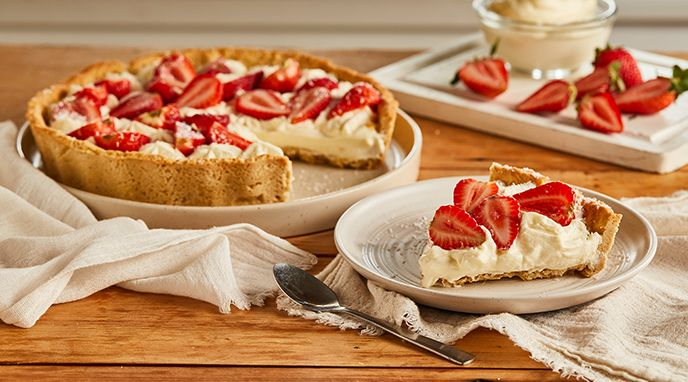

- 250 gramos de harina 0000
- 125 gramosde manteca
- 50 gramos de azucar impalpable
- escencia de vainilla
- 1/2 cuchadarita de bicarbonato de sodio
- 1 cucharadita de polvo de hornear
- 1 huevo
Masa
- 200 gramos de crema de leche
- 60 gramos de azucar
- escencia de vainilla
- 500 gramos de frutillas
Relleno
- Colocar en un bowl la manteca fría cortada en cubitos junto con el azúcar impalpable, el harina, el polvo de hornear y el Bicarbonato de sodio
- Comenzar a integrar con la ayuda de un tenedor hasta que quede una preparación con consistencia arenosa.
- En otro bowl, poner el huevo con la Esencia de Vainilla y agregar esta mezcla al arenado.
- Integrar la masa sin amasar demasiado.
- Envolver en papel film y reservar en el frío durante 30 minutos.
- Retirar la masa del frío y estirar, con ayuda de un palo de amasar.
- Colocarla en un molde de tarta.
- Pinchar la masa con ayuda de un tenedor y volver a reposar en el frío 15 minutos.
- Mientras, precalentar el horno a 180° C.
- Cocinar la tarta durante unos 20 minutos.
- Retirar del horno cuando la masa se encuentre dorada, dejar enfriar y desmoldar.
Preparacion para la masa
- Batir la crema con el azúcar y la Esencia de Vainilla a punto chantilly.
- Cubrir el interior de la tarta con la crema.
- Cortar las frutillas en láminas y colocar sobre la crema chantilly.
Preparacion para el relleno